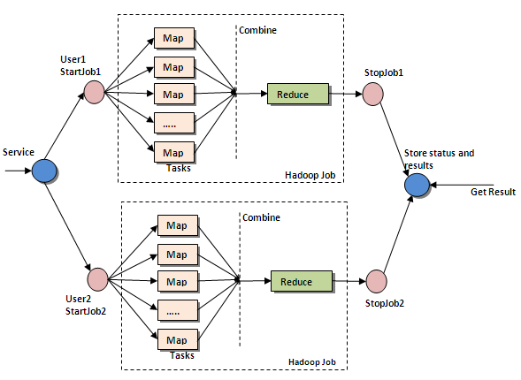

Book problems and notes for chapter 2.
Interprocess Communication
Threads share a common address space, while processes have separate memory, but
both allow code to be executed simultaneously on multiple cores or when another
thread is blocking.
Clients and servers interact to create a distributed system, a client asks for
something and a server provides it. There are many available abstractions to
reduce complexity, these are called middleware.
OSI model
There are 7 layers of network communication,
Layer 7 - application layer, highest level, most abstract regarding user
applications.
Layer 6 - Presentation layer - rendering the application layer or otherwise
processing received data into a format that the application layer can handle
Layer 5 - Session layer - Protocol for how to interact between two systems and
maintain a connection state
Layer 4 - Transport layer - Determine how to send the data between two systems,
handle error correction, etc.
Layer 3 - network layer - Determines the route that packets take, how they
navigate between the two machines
Layer 2 - Data link layer - Converts bits into frames and adds error correction
Layer 1 - Physical layer - how the packets actually travel over the hardware and
get from location 1 to location 2.
Transport layer protocols
UDP/IP - packets aren’t necessarily ordered and error corrected - program needs
to determine what order packets belong in and if there were any errors
TCP/IP - lost data is retransmitted and ordered, and duplicates are rejected
Sockets
Sockets are integrated in the unix OS and used for interprocess communication.
Stream sockets - tcp/ip
Datagram socket - udp/ip
Client creates socket binds it to a port and connects to a sever, which has
created a socket and bound it to a port and is capable of receiving.
Remote procedure calls
Clients and servers may not run on the same machine in a distributed system - so
procedure calls can be made over a network, rather than dealing with shared
memory.
Remote procedure calls block clients until they receive the result or a message
from the server, but if there are crashes, they are not handled gracefully.
To work around that problem, client stubs abstract the call so it behaves like a
local procedure call. Similarly, server stubs handle messages and abstract the
procedure call so it appears that it came from the local system.
The stubs need to resolve differences between the two systems as far as their
architecture goes, and to resolve various network and other failures (which may
be application specific - e.g. at least once, at most once or
exactly once.
One such example of RPCs is Sun’s open Network Computing RPC, which
automatically generates server and client stubs to handle things.
A generalization of RPC is remote method invocation - objects that live on a
server and are referred to by clients, rather than copied to them.
Message passing
Most distributed systems are implemented by message passing, located above
tcp/ip or udp/ip layer, but below application layer.
Messages can be either transient or persistent.
Transient messages are messages that don’t live around if they’re not received,
persistent messages are messages that keep on trying until they’re received.
Web services
Many web services utilize these communications with SOAP - simple object access
protocol, and others, over XML interfaces.
This allows for web applications to dynamically access endpoints given from web
servers.
Cloud computing
Many distributed networks are closely bound to cloud computing in this day and
age. This allows people with scalable systems to pay only what they use, and
average hourly prices are rather low.
MapReduce
Map applies a function to all elements in a list in parallel, and reduce takes
the output of a mapping operation and compiles it to a final result.
Map reduce uses key value pairs. It then compiles all values associated with
each key into one single value for that key.
MapReduce key values can’t necessarily be used for many parallel
algorithms, because these tasks make it difficult to break down to a simple
single mapping and reducing lambda, so they must be chained together to work.
See below for an example:

Hadoop
Hadoop is an open source implementation that the author of this blog is
emulating in his Map Reduce framework. It abstracts the communication between
nodes and allows the developer to focus on writing distributed code.
It uses a master-slave architecture, with the master receiving and dispatching
the job over Hadoop Distributed File System, which travel to all the slave
nodes, which all contribute computational power to solving to the problem.
When done, the slaves communicate back to the master with the result, and the
master reduces the data into more manageable chunks.
Slaves can also act like masters, and further subdivide the problem.
Failures are automatically handled by the system and rescheduled.
Mobile Agent
Another method of communication between processes.
A mobile agent is code that migrates from one machine to another, and brings
along with it bits of data that it needs to do its job.
This offers more flexibility when determining the communication process, which
with RPCs only allows blocking or otherwise waiting until the procedure call is
finished, and then processing the results on the client.
Problems
2.2.
Net banking allows one to interact with the banking system remotely. In order
for me to pay my bills with net banking, I first need to send information to my
bank, with my web browser acting as a client, and the bank acting as a server.
Then, my bank needs to connect with the national banking framework as a client
to tell it how much money it is sending and where. Finally, the national banking
framework communicates with the utility company’s bank and then that bank
communicates with the utility company. At the end of all that, I would get a
receipt from the utility company confirming payment.
2.6.
Instant messaging can work in multiple ways. It can either be a centralized
server or a peer to peer network.
For a centralized server, my client would need to communicate to the central
server with a message and an address. The server would then need to resolve the
address of my friend and send my message to him. Finally, depending on the type
of client, I would receive a read receipt.
For a peer to peer communication, I would need to somehow already know my
friend’s address (such as his mobile number). If that were the case, I can route
over normal backbones to communicate with him directly, rather than having to
use a server as a go-between.